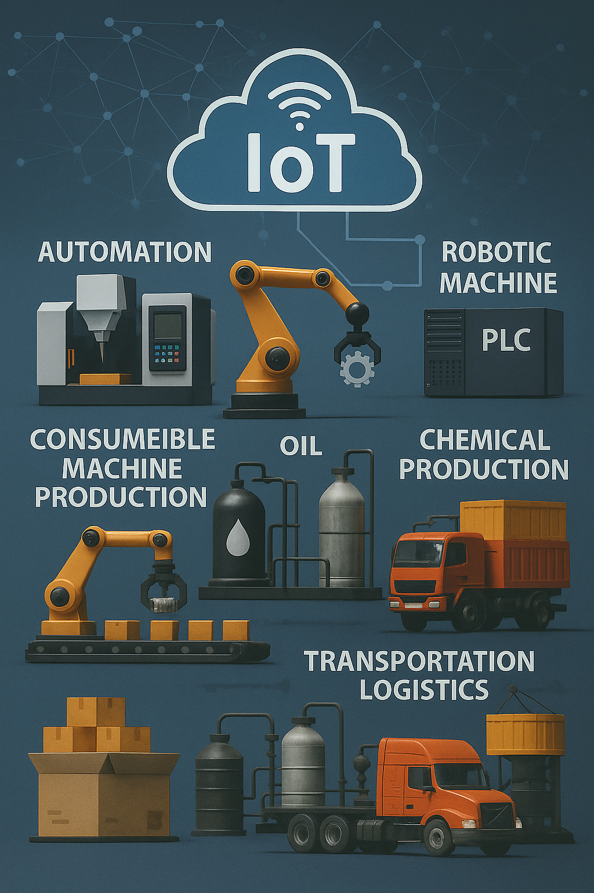

Dengan fokus pada otomasi industri, kami menyediakan solusi terintegrasi yang mampu meningkatkan keandalan proses produksi dan daya saing perusahaan Anda.
Hubungi KamiPT Otomasi Solusi Indonesia adalah perusahaan yang berfokus pada penyediaan solusi industrial automation terintegrasi, material industri berkualitas, serta layanan machining presisi. Kami hadir untuk membantu dunia industri meningkatkan efisiensi, produktivitas, dan keandalan operasional melalui penerapan teknologi otomasi yang tepat.
Bagi kami, otomasi bukan sekadar menghadirkan mesin atau perangkat, melainkan membangun sistem yang mampu menyelaraskan kecepatan, akurasi, dan konsistensi dalam setiap proses produksi. Karena itu, setiap solusi yang kami tawarkan selalu dirancang untuk menjawab kebutuhan spesifik klien—mulai dari optimalisasi lini produksi, peningkatan kualitas output, hingga pengurangan biaya operasional.
Dengan pengalaman luas di berbagai sektor industri, kami menghadirkan layanan menyeluruh dari hulu ke hilir:
Didukung oleh tim engineering yang berpengalaman serta pemahaman mendalam terhadap kebutuhan industri di Indonesia, kami siap memberikan layanan menyeluruh—mulai dari konsultasi, perancangan, penyediaan material, implementasi, hingga dukungan purna jual.
Komitmen kami sederhana: menjadi mitra strategis yang membantu perusahaan Anda bertransformasi menuju sistem industri yang lebih modern, efisien, dan berdaya saing tinggi di era digital.
Jelajahi Layanan Kami
Nur Laili F., pendiri sekaligus Direktur Utama PT Otomasi Solusi Indonesia, memiliki visi untuk mentransformasi industri nasional melalui penerapan teknologi otomasi yang tepat. Di bawah kepemimpinannya, perusahaan terus berkembang menjadi mitra terpercaya dalam penyediaan material industri, jasa machining presisi, dan solusi otomasi terintegrasi.
Komitmen beliau terhadap inovasi, kualitas, dan kemitraan jangka panjang menjadi fondasi utama dalam mendukung keberlanjutan serta daya saing industri di Indonesia.
"Kami percaya bahwa masa depan industri Indonesia terletak pada adopsi teknologi otomasi yang smart dan sustainable. Melalui solusi yang kami tawarkan, kami berkomitmen untuk membantu perusahaan-perusahaan Indonesia menjadi lebih kompetitif di kancah global."
Menjadi perusahaan penyedia solusi industri terintegrasi terdepan di Indonesia yang inovatif, terpercaya, dan berkelanjutan, serta berkontribusi aktif dalam memajukan industri nasional.
Setiap produk melalui proses quality control ketat dengan standar internasional, memastikan keandalan dan performa optimal untuk operasional industri Anda.
Menawarkan nilai terbaik dengan harga yang kompetitif, memastikan efisiensi biaya tanpa mengorbankan kualitas dan keandalan produk.
Didukung oleh tenaga ahli berpengalaman yang siap memberikan solusi teknis terbaik dan konsultasi yang mendalam untuk kebutuhan spesifik industri Anda.
Komitmen terhadap kepuasan pelanggan dengan layanan responsif, solusi tepat waktu, dan dukungan purna jual yang komprehensif dan terpercaya.
Kami siap menjadi mitra terpercaya untuk memenuhi kebutuhan industri Anda dengan produk dan layanan berkualitas tinggi yang didukung oleh tim profesional.
Hubungi Kami Sekarang